On this page
Film Techniques
List of Techniques
| Film technique / metalanguage term | Definition / Effect |
|---|---|
| Close-up shot | Tightly frames a person or a subject. Enables the audience to see the emotions of a character or details on a subject. |
| Extreme close-up | A more intense close-up that might focus on a specific feature. |
| Mid shot | Usually shows an actor from the waist up. Focus is on the characters but also shows the environment they are in. |
| Long shot | Used to show a subject from a distance, establishing them within a setting. |
| Establishing shot | Usually the first shot of a scene to establish the location and environment. |
| Panning shot | When the camera moves horizontally from its fixed position and mirrors the motion of looking from side to side. |
| Point of view shot | Mimics what a character in a scene is seeing, putting the audience into their perspective. |
| Framing | The composition of characters or subjects within a single shot. |
| Two shot | A medium shot showing two actors in a single frame. |
| Mise en scène | All elements contained in a single frame (lighting, costuming, positioning, set, props). |
| Low angle shot | Subject is shot from below eye level to make them appear powerful, dominant, or morally superior. |
| High angle shot | Subject is filmed above eye level to make them appear vulnerable or weak. |
| Aerial shot | A shot with the camera positioned directly above a subject. |
| Over the shoulder shot | A medium close-up shot from behind another character’s shoulder, typically used in conversations. |
| Diegetic sound | Sound within the world of the film — characters can hear it. |
| Non-diegetic sound | Sound added in post-production — characters cannot hear it (e.g. soundtrack, narration). |
| Setting | The environment in which the film is set. Can shift over time. |
| Motifs | A dominant or recurring prop, image, or symbol (e.g. mirrors, frames, candles, chandeliers). |
| Zoom in / Zoom out | A change in focal length during a shot to magnify or reduce the subject. |
| Film noir lighting | Low-key lighting used to emphasise shadows and create strong contrasts. |
| Three-point lighting | Technique using key light, back light, and fill light to evenly illuminate a subject. |
Analysis of Particular Scenes
Sunset Boulevard is perhaps the most famous film about film. A darkly funny yet disturbing noir, it follows washed-up screenwriter Joe Gillis being pulled into the murky world of even-more-washed-up former silent film star Norma Desmond, disingenuously helping with her screenplay. Critical commentary on the film industry is obviously included here, but Billy Wilder’s 1950 film digs deeper to explore the blurred line between fantasy and reality, as well as power, authenticity and self-delusion. Crucially, these themes are often shown in the film’s construction, via the cinematic techniques implemented by Wilder in each scene. This subsection will explore the most important examples of these cinematic techniques. Remember, VCE examiners are on the lookout for students who can offer a close reading of the text they are discussing, giving specific examples of how its creator has constructed it to support their arguments. Just look at the difference between an essay that says:
‘Through the final shot of the film, Wilder shows Norma completely succumbing to her fantasy.’
Compared to one that argues:
‘Through his utilisation of an increasingly glossy and distorted filter in the ominous final shot, Wilder depicts Norma being completely overtaken by her romanticised fantasy of ‘Old Hollywood’.’
Camera Techniques: Shot Types and Angles
Camera techniques are arguably the primary way that a director will intentionally direct the eye of the audience, directly framing how they view a film. The two most basic ways in which the camera is used for this are through the distance between the subject (what the scene is about) and the camera, or the ‘shot type’ and the ‘camera angle’ at which the subject is being filmed.
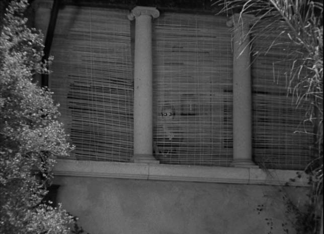
Our first look at Norma Desmond is within the wide shot above, just as Joe Gillis has entered her dishevelled mansion early in the film. As a rule, the introductory shot of a character is always worth closely analysing, as the director typically establishes their characteristics and place within the film’s wider world. Shown above, this distant first look at Norma establishes her distance, both physical and mental, from the world around her. Removing herself from an industry that has long since moved on from her, she is severely out of touch with the reality of the world outside her home. Crucially, as this same shot is from Joe’s perspective, Wilder also foreshadows the more specific character ‘distance’ that will emerge between the two. Here, the audience sees the space Joe will similarly leave between himself and Norma, disingenuously humouring her poor-quality scripts and romantic advances and, therefore, always keeping her ‘at a distance’.
Another shot conveying crucial information about character relationships is shown when Joe officially ‘loses’ Betty towards the end of the film, refusing to give up his ‘long-term contract’ with Norma. Here, Wilder consciously frames the scene’s subject (Betty) at a distance with a medium shot. Supported by her refusal to make eye contact with Joe and her literal statement that she ‘can’t look at [him]’ we again see physical distance between the camera and the subject translating to emotional distance between two characters. The impact of them no longer ‘seeing eye to eye’ is additionally heightened by the clear chemistry they previously demonstrated across the film.
Key Examples of Camera Angles
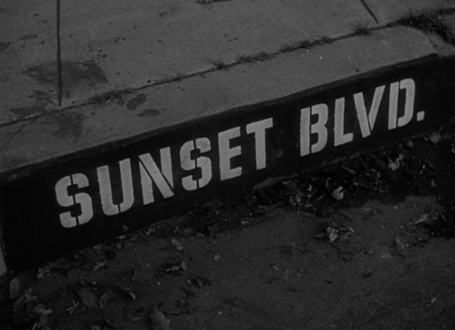
Just like the introductory shot of a character is worth digging into, the opening shot of a film is also incredibly important to unpack. Sunset Boulevard’s seemingly straightforward opening shot simply includes the film’s title, by showing the real-life Hollywood street. However, notice that we are not seeing a ‘Sunset Boulevard’ street sign (the more obvious choice), but instead a dirty and stained curbside. Further, Wilder shoots this curb from a high angle. Therefore, the film’s opening shot establishes maybe the most central aim of Wilder’s film; offering a critical look at the superficiality and flawed nature of Hollywood. As such, we are literally looking down on the film industry in the first moment of the film, represented by this dirty and unflattering visual symbol of Hollywood. This, therefore, is setting the stage for the satire and critical commentary that will follow.
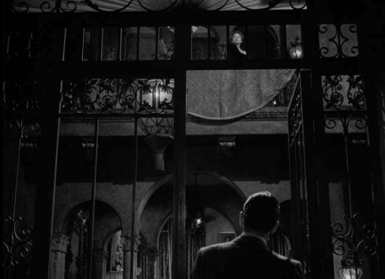
Wilder’s careful use of camera angles is further shown at the end of the film after Betty abandons Joe at the gate of Norma’s mansion. Crucially, this all happened due to the desperate exertion of power by Norma, who called Betty and revealed the details of her relationship with Joe. As such, Wilder shoots Norma at a low angle, as Joe looks up at her haughty gaze. The level of power that Norma has exerted over Joe may seem minimal within the moment, but when we consider what happens next, this shot becomes much more important. On the brink of descending completely into madness and taking Joe’s life, Wilder uses this shot to establish that Joe should be looking up in fear at Norma, and his dismissive and pitiful opinion of her will soon lead to his death.
Mise-en-Scène
Mise-en-scène is perhaps the most deceptively simple cinematic technique. It involves analysing what appears within a frame and where it has been placed by the director. This includes elements such as the actor’s costumes, the props and the design of the set. Often, mise-en-scène is used to reinforce something we are being told about a character already through the film’s dialogue and acting.
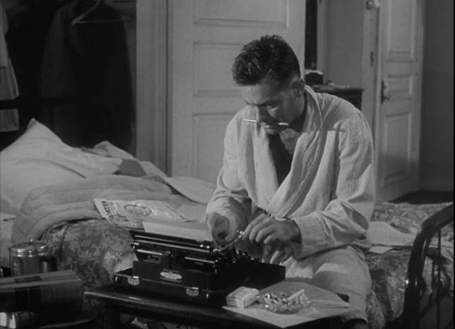
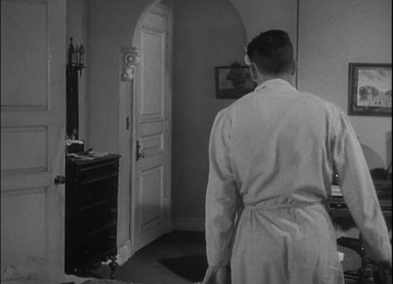
We can see a key example of characterisation through mise-en-scène early in the film, where the audience’s introduction to Joe Gillis visually communicates his unconcerned and detached attitude, as well as his tendency to settle for something convenient despite its inauthenticity. His being dressed in a bathrobe with the blazing sun outside (and his debt collectors clearly up and doing their jobs) speaks to his slovenliness and uninvested approach to life. The set design within this scene further characterises Joe, with the script directly describing the ‘reproductions of characterless paintings’ that cover his walls. Here, the set arguably provides a visual metaphor for the profit-driven ‘Bases Loaded’ script he is writing at that very moment, later described by Betty as having come ‘from hunger.’
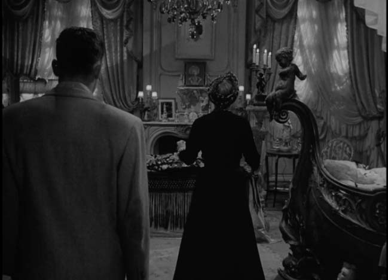
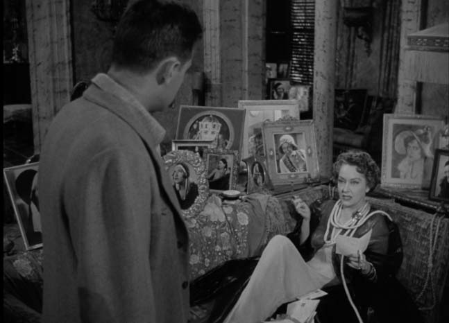
Equally, our introduction to the home of Norma Desmond helps establish the key elements of her character. The house is, as Joe describes, ‘crowded with Norma Desmonds’, in the form of countless framed photos of her from her silent film era. These self-portraits constantly looking out onto Norma symbolise the deluded fantasy world she has placed herself in. They both show how this world is based around her still being a youthful and famous actress, and that this delusion is maintained through Norma only communicating inwardly, refusing to face the reality of the outside world.
| Example | Technique | Analysis |
|---|---|---|
| Close up | -The close up, at its most essential, focuses us in on human emotion, expressivity, and it does it in an intimate way. It provides us a heightened attention to the details of a character’s face and the nuance that comes with it. -The close up confirms Norma’s comment that she’s still big (“I am big; it’s the pictures that got small.”), depicting the overwhelming sense of pride and relevance Norma believes she still has. | |
| Long shot | -she is a mysterious gothic figure, shielded not only by the window shades but also by her sunglasses, confirming the impression that Joe had of her mansion. -The mansion functions as an analogue for Norma herself: just as it is decaying and hidden from the world so is she, and on in the inside it is full of pictures of Norma, confirming her narcissistic obsession with herself. -this distant first look at Norma establishes her distance, both physical and mental, from the world around her. Removing herself from an industry that has long since moved on from her, she is severely out of touch with the reality of the world outside her home. Crucially, as this same shot is from Joe’s perspective, Wilder also foreshadows the more specific character ‘distance’ that will emerge between the two. | |
| Mid shot | -shows a symbolic representation of her attempts to cling on to Joe and prevent him from leaving, as his chain gets snagged by the door as he tries to exit. While his face is slightly obscured, we can detect his frustration as he makes his escape from the clutches of Norma and her mansion and tries to head back to the world he is familiar with -“I didn’t know where I was going. I just had to get out of there. I had to be with people my own age.” | |
| Extreme close up | -“She went through a merciless series of treatments. Like an athlete training for the Olympic Games she counted every calorie, went to bed every night at nine. She was absolutely determined to be ready. Ready for those cameras that would never turn.” -This extreme close up is achieved not just with the camera but with the intervention of a magnifying glass, which emphasises Norma’s eye in particular. The shot gives the point of view of one of the people treating Norma, taking us closer |
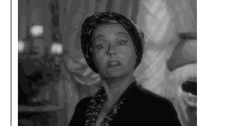
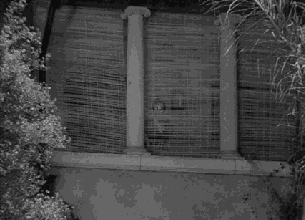
| decaying and hidden from the world so is she |
| inside it is full of pictures of Norma, |
| narcissistic obsession | |||
| -this distant first look at Norma establishes her d | istance, both | ||
| physical and mental, from the world around her. | Removing | ||
| herself from an industry that has long since moved on from | |||
| her, she is | severely out of touch | with the reality of the worl |
| perspective, Wilder also | foreshadows | t | he more specific |
| character ‘distance’ that will emerge between the two. |
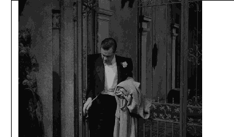
| to Joe and prevent him from leaving |
| by the door as he tries to exit |
| obscured, we can detect his frustration |
| -“I didn’t know where I was going. I just had to get out of |
| there. I had to be with people my own age |
| -“ | She went through a merciless series of treatments. Like an | |||
| athlete training for the Olympic Games | she counted every | |||
| calorie, went to bed every night at nine. She was absolutely | ||||
| determined to be ready. | Ready for those cameras that woul | |||
| never turn | .” |
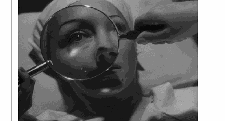
| in the camera generally does in the close ups that Norma s desires. -Notably, in the following scene, Norma, in the throes of her treatment, can’t even permit Joe to look at her when she says good night as she hasn’t achieved the perfection that she longs for, telling us something about the impossible demands for beauty and youth that Hollywood imposes on those who wish to be a star. | |
| Group shot | -“She’d take me for rides in the hills above Sunset. The whole thing was upholstered in leopard skin and had one of those car phones, all gold plated.” -The composition of this group shot uses the dividing line of the windscreen to separate Joe and Max from Norma, suggesting a difference in status between the two men and Norma, who is effectively their employer. Joe is starting to look visibly uncomfortable in this group dynamic, as opposed to the impassive expressions on the faces of Max and Norma. |
| Over the shoulder shot | -“However by then I’d started concocting a little plot of my own.” -As Joe reads Norma’s script he’s unimpressed, but the camera slowly draws back into an over the shoulder shot revealing that Norma has been watching him all along. The over the shoulder emphasises this act of watching but separates us from Norma’s point of view; the audience gets to see her watching Joe as he puts his plot into action to exploit Norma’s wealth for his own gain, a plot which will ultimately lead to his own demise. |
| Crowd shot | -“Writers without a job, composers without a publisher, actresses so young they still believed the guys in the casting office. A bunch of kids who didn’t give a hoot just so long as they had a yuk to share.” -Crowd shots are not about individuals but greater entities and this crowd shot represents the concepts of youth and fun that Joe is seeking. It’s juxtaposed with Norma’s empty mansion which is a place of wealth but dead on the inside. Here we see people without stable employment (which is a commentary on the tenuous nature of employment in the industry) but it is nevertheless full of life, the real and messy world that Joe has been steadily drawn away from by Norma. |
| impossible demand | |
| for beauty and youth that Hollywood imposes on those who | |
| wish to be a star. |
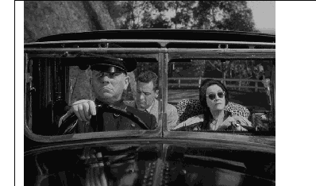
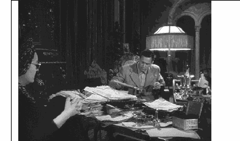
| plot into action to exploit | |
| Norma’s wealth for his own gain, a plot which will ultimately | |
| lead to his own demise. |
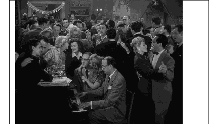
| actresses so young they still believed the guys in the casting |
| office. |
| commentary on the tenuous nature of employment in the |
| industry) |
| Two shot | -shows the direction in which the relationship between Norma and Joe is developing. -the two shot here is shot from an angle and puts Joe slightly in the foreground, strengthening the audience identification with Joe, whose voice-over narration has already implicitly put us on his side. -Norma is absorbed with viewing her own image on screen, a further example of the narcissistic environment she has created for herself in her mansion. -Joe's gaze, however, is directed at Norma's hand, which has clutched his arm. Joe's voice-over suggests that in this moment she is "forgetting that she's [his] employer" but her proprietorial attitude towards Joe throughout the film indicates that she hasn't forgotten at all, she is merely taking possession of what she has paid for. -There is an ironic inversion here of the typically sexist predatory behaviour of powerful men in Hollywood taking advantage of vulnerable women who are desperate to 'make it' in show business; here it is the older woman who is the predator, her hand shown as having claw-like characteristics as she latches onto her prey. -This scene is a foreshadowing of the way their relationship will develop over the course of the film. |
|---|---|
| Establishing shot | -“It was a great, big white elephant of a place, the kind crazy movie people built in the crazy twenties. A neglected house gets an unhappy look. This one had it in spades. It was like that old woman in Great Expectations, that Miss Havisham in her rotting wedding dress and torn veil, taking it out on the world because she’d been given the go-by.” -Joe’s narration ties in with the establishing shot of Norma’s mansion. -Joe’s voiceover takes us in two different directions: the world of Hollywood and the world of Gothic literature, giving us an interpretive framework that guides us in particular directions. This is particularly true of the mention of Miss Havisham, so when we see Norma we associate her with the vengeful abandoned woman. -This is a sense of dread that Joe and the camera shot are establishing, and it’s a clear connection of the house with the |
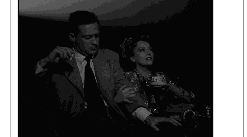
| absorbed with viewing her own imag | |
| narcissistic environment |
| predatory behaviour of powerful men in Hollywood taking |
| advantage of vulnerable women who are desperate to 'make |
| it' in show business; here it is the older woman who is the |
| predator, her hand shown as having claw-like characteristics |
| as she latches onto her prey. |
| -“It was a great, big white elephant of a place, the | kind crazy | ||||
| movie people built in the crazy twenties | . | A neglected house | |||
| gets an unhappy look. | This one had it in spades. | It was like | |||
| that old woman in Great Expectations, that Miss Havisham in | |||||
| her rotting wedding dress and torn veil, taking it out on the | |||||
| world because she’d been given the go-by.” |
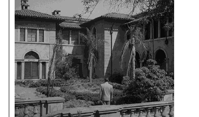
| character: the two are fully intertwined. | |||
| Insert | -“How could she breathe in that house so crowded with Norma Desmonds? More Norma Desmonds. And still more Norma Desmonds.” -The information that this insert of the multitude of photos reveals about Norma is the depth of her narcissism. Her obsession with her past selves is overwhelming, cluttering her mansion despite its great size. -the photographs are all of younger versions of Norma, a past which she futilely longs to recapture. | ||
| Pan | -“Maybe you’d like to hear the facts, the whole truth. If so, you’ve come to the right party.” -The opening scenes of the film establish a mystery by starting at the end, with the death of this as yet unnamed movie writer floating in the pool. -We start out on Sunset Boulevard itself, watching police cars roar down the street with sirens wailing. A whip pan as they go past the position of the camera puts the viewer in the position of a curious onlooker, a position which is solidified as the cars enter the driveway of the mansion and and the narration wonders if we’d like to hear the facts. -A pan follows the police and cameraman as they rush towards the pool. We’ve noticed something happening and the camera puts us in the position of turning our heads as we seek to sate our curiosity. -We’re rewarded by a dead body, but now our curious minds seek to discover how he came to be there; just as the narrator suggests, we want to hear the facts. Wilder uses another pan at the climax of the film when Norma shoots Joe and we follow him from right to left as we finally discover how he ended up in the pool. | ||
| Medium shot | -Joe officially ‘loses’ Betty towards the end of the film, | ||
| refusing to give up his ‘long-term contract’ with Norma. | |||
| -Here, | Wilder consciously frames the scene’s subject (Betty) at | ||
| a distance with a medium shot. Supported by her refusal to | |||
| make eye contact with Joe and her literal statement that she | |||
| ‘can't look at [him]’ we again see physical distance between | |||
| the camera and the subject translating to emotional distance |
| -“How could she breathe in that house so crowded with |
| Norma Desmonds? More Norma Desmonds. And still more |
| Norma Desmonds.” |
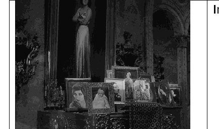
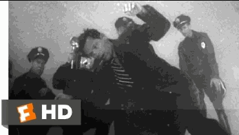
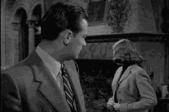
| between two characters. | ||||||||||||||
| -The impact of them no longer ‘seeing eye to eye’ is | ||||||||||||||
| additionally heightened by the clear chemistry they previousl | ||||||||||||||
| demonstrated across the film. | ||||||||||||||
| High angle | -we are not seeing a ‘Sunset Boulevard’ street sign (the more obvious choice), but instead a dirty and stained curbside. -Wilder shoots this curb from a high angle. Therefore, the film’s opening shot establishes maybe the most central aim of Wilder’s film; offering a critical look at the superficiality and flawed nature of Hollywood. -As such, we are literally looking down on the film industry in the first moment of the film, represented by this dirty and unflattering visual symbol of Hollywood. | |||||||||||||
| obvious choice), but instead a | dirty and stained curbside. | |||||||||||||
| -Wilder shoots this curb from a | high angle | . Therefore, the | ||||||||||||
| film’s opening shot establishes maybe the most central aim of | ||||||||||||||
| Wilder’s film; | offering a critical look at the superficiality an | |||||||||||||
| flawed nature of Hollywood. | ||||||||||||||
| -As such, we are literally | looking down | on the film industry in | ||||||||||||
| the first moment of the film, | represented by this dirty and | |||||||||||||
| unflattering visual symbol of Hollywood. | ||||||||||||||
| Low angle | -Wilder shoots Norma at a low angle, as Joe looks up at her haughty gaze. -On the brink of descending completely into madness and taking Joe’s life, Wilder uses this shot to establish that Joe should be looking up in fear at Norma, and his dismissive and pitiful opinion of her will soon lead to his death | -Wilder shoots Norma at a low angle, as Joe looks up at h | ||||||||||||
| haughty gaze. | ||||||||||||||
| - | On the brink of descending completely into madness and | |||||||||||||
| taking Joe’s life, Wilder uses this shot to establish that Joe | ||||||||||||||
| should be | looking up in fear | at Norma, and his dismissive and | ||||||||||||
| pitiful opinion of her will soon lead to his death | ||||||||||||||
| Panning shot | -The camera pans horizontally downwards as Norma cascades down the stairs. Norma's decline represents the loss of her dreams as her ambition of returning back into films collapses. It is juxtaposed by her body language with her head help up high with pride, symbolizing how she is now completely consumed by her delusion, still thinking that she's a star. -"The dream she had clung to had so desperately unfolded her." -This quote emphasizes how deeply entrenched Norma is in her fantasy, suggests she has now been completely engrossed by her illusion, blurring the lines between her fabricated world and the reality she refuses to face. | |||||||||||||
| Mise en scene | -Joe is being dressed in a bathrobe with the blazing sun | |||||||||||||
| outside (and his debt collectors clearly up and doing their | ||||||||||||||
| jobs) speaks to his | slovenliness and uninvested approach | |||||||||||||
| life. | ||||||||||||||
| -The | set design | within this scene further characterises Joe | ||||||||||||
| characterless paintings’ that cover his walls. | ||||||||||||||
| -Here, the set arguably provides a visual metaphor for the |
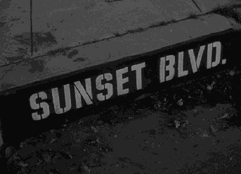
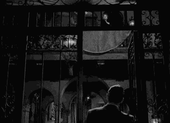
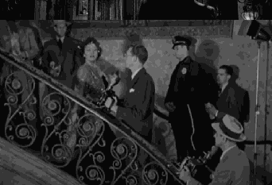
| - | The camera pans horizontally downwards as | Norma | cascades | ||||||
| down the stairs | . Norma's decline represents the loss of he | ||||||||
| dreams as her ambition of returning back into films collapses. | |||||||||
| It is juxtaposed by her body language with her head help | |||||||||
| high with pride, symbolizing how she is now completely consumed by her delusion, still thinking that she's a star. | |||||||||
| -"The dream she had clung to had so desperately unfolded | |||||||||
| her." | |||||||||
| -This quote emphasizes how | deeply entrenched Norma is | ||||||||
| her fantas | y, suggests she | has now been | completely engrossed | ||||||
| by her illusion | , | ||||||||
| world and the reality she refuses to face |
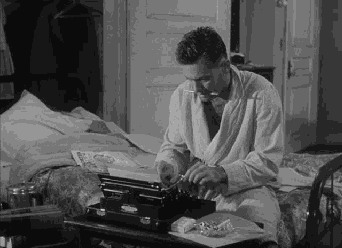
| profit-driven ‘Bases Loaded’ script he is writing at that very | ||||||||||
| moment, later described by Betty as having come ‘from | ||||||||||
| hunger.’ | ||||||||||
| Mise en scene | -the house is, as Joe describes, ‘crowded with Norma Desmonds’, in the form of countless framed photos of her from her silent film era. -These self-portraits constantly looking out onto Norma symbolise the deluded fantasy world she has placed herself in. -They both show how this world is based around her still being a youthful and famous actress, and that this delusion is maintained through Norma only communicating inwardly, refusing to face the reality of the outside world. | -the house is, as Joe describes, ‘crowded with Norma Desmonds’, in the form of countless framed photos of her from her silent film era. | ||||||||
| -These self-portraits constantly looking out onto Norma symbolise the deluded fantasy world she has placed herself in. -They both show how this world is based around her still being a youthful and famous actress, and that this delusion is maintained through Norma only communicating inwardly, refusing to face the reality of the outside world. | ||||||||||
| refusing to face the reality of the outside world. | ||||||||||
| Symbol- the dead chimp | -Norma’s pet monkey plays a key foreshadowing role | from | ||||||||
| beyond the grave | ||||||||||
| -The | chimp, a pet owned and trained by Norma to amuse her, | |||||||||
| leaves a vacant role that Joe will gradually fill after having unknowingly interrupted its funeral. | ||||||||||
| unknowingly interrupted its funeral. | ||||||||||
| -From this point in the film, Joe is manipulated, or ‘trained’, by Norma to entertain and provide companionship to her. | ||||||||||
| -From this point in the film, | Joe is manipulated, or ‘trained | |||||||||
| by Norma to | entertain and provide companionship to her. | |||||||||
| -Naturally, Joe also ends up dead within the bounds of Norma’s estate, with this symbol, therefore, foreshadowing the full trajectory of his character. | ||||||||||
| - | Naturally, Joe also ends up dead within the bounds of | |||||||||
| Norma’s estate, with this symbol, therefore, foreshadowin | ||||||||||
| the full trajectory of his character. | ||||||||||
| -All of this is directly alluded to through Joe’s description of the ‘mixed-up dream’ he has the night of the funeral, imagining ‘an organ [player]’ and the ‘chimp…dancing for pennies’ that he will soon become. | ||||||||||
| pennies’ | that he will soon become. | |||||||||
| Symbol- organ | -serves as a physical reminder of the | unflattering parts of the | ||||||||
| new role Joe must play. | ||||||||||
| -Included after Joe wakes from his ‘mixed-up dream’, the shot | ||||||||||
| above frames | Max’s organ-playing hands as massive and | |||||||||
| overpowering, | as the much-smaller Joe storms in demanding | |||||||||
| to know why his ‘clothes and things’ were moved to Norma’s | ||||||||||
| house without his say-so. |
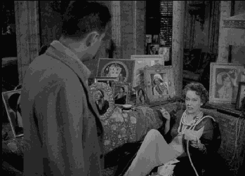
| constantly | looking out | onto Norma |
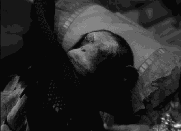
| -All of this is directly alluded to through Joe’s description o | |
| the ‘ | mixed-up dream’ he has the night of the funeral, |
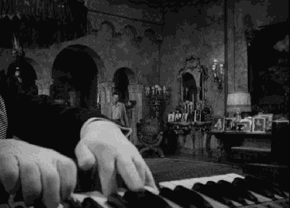
| -Crucially, Norma then reveals that she ordered this action and that Joe's apartment debts are ‘all taken care of’, hand- waving his attempt at grasping back some control and dignity by proposing it be ‘deduct[ed]...from [his] salary’. -This scene reveals the symbolic role the organ plays within Sunset Boulevard, reminding Joe of the shameful and powerless role of the ‘pet monkey’ that he now fills, as well as what he will be ‘dancing’ for. | |||||||||||||||
| waving his attempt at grasping back some control and dignity | |||||||||||||||
| by proposing it be ‘deduct[ed]...from [his] salary’. | |||||||||||||||
| -This scene reveals the symbolic role the organ plays within Sunset Boulevard, reminding Joe of the shameful and | |||||||||||||||
| -This scene reveals the symbolic role the organ plays | |||||||||||||||
| within | Sunset Boulevard, | reminding Joe of the | |||||||||||||
| powerless role of the ‘pet monkey’ that he now fills, as well a | |||||||||||||||
| what he will be ‘dancing’ for. | |||||||||||||||
| Cinematic allusions | -Wilder does not shy away from adding an extra level of realism to his references to the film industry. | ||||||||||||||
| realism to his references to the film industry. | |||||||||||||||
| -Central to this is the use of the real (and still functional) Paramount Pictures studio to which Joe attempts to sell his | |||||||||||||||
| -Central to this is the use of the | real (and still functional) | ||||||||||||||
| Paramount Pictures | studio | ||||||||||||||
| clichéd baseball script. Notably, this is the studio that actually | |||||||||||||||
| released | Sunset Boulevard | , all of which adds a self- | |||||||||||||
| scenes contain. | |||||||||||||||
| -Joe’s dry observation that the extravagance of the funeral for Norma’s pet means that he ‘must have been a very important chimp’, perhaps the ‘great- grandson of King Kong’. -the allusion to Charles Dickens’ classic novel Great Expectations. Here, Joe muses that the ‘unhappy look’ of Norma’s house reminds him of ‘Miss Havisham’ from this text. | Literary allusions | - | |||||||||||||
| world of | real Hollywood | , again working to strengthen the | |||||||||||||
| satire it offers of this industry. | |||||||||||||||
| -Havisham (a character, who, after being abandoned by her fiance, refuses to change her clothing and lives secluded in a ‘rotting wedding dress’) directly parallels Norma, being a tragic figure immovably stuck in the past, with Norma's | |||||||||||||||
| fiance, | refuses to change her clothing | and | |||||||||||||
| ‘rotting wedding dress | ‘) directly parallels Norma, being a | ||||||||||||||
| tragic figure immovably stuck in the past | , with Norma's | ||||||||||||||
| excessive placement of | young self-portraits being reminiscent | ||||||||||||||
| of Havishman’s insistence on keeping her house’s clocks at | |||||||||||||||
| -Further, the eventual fate of Miss Havisham within Great Expectations, with her wedding dress catching fire and leaving her as an invalid, foreshadows Norma’s similar descent to invalidity through her madness. | |||||||||||||||
| -Further, the eventual fate of Miss Havisham within | Grea | ||||||||||||||
| Expectations, | with her wedding dress | catching fire and | |||||||||||||
| leaving her as an invalid, foreshadows Norma’s similar | |||||||||||||||
| descent to invalidity through her madness. |
| -Joe’s dry observation that the | ||
| extravagance of the funeral for | ||
| Norma’s pet means that he ‘ | mus | |
| have been a very important | ||
| chimp’, perhaps the ‘ | great- | |
| grandson of King Kong’ |
| he allusion to Charles Dickens’ | |||
| classic novel | Great Expectations. | ||
| Here, Joe muses that the | |||
| ‘unhappy look’ of Norma’s hous | |||
| reminds him of ‘ | Miss Havisham’ | ||
| from this text. |
Further Mise-en-Scène Analysis
Set Design and Locations
Norma Desmond’s Mansion: The opulent yet decaying mansion is central to the film. It represents Norma’s past glory and her current isolation. The grand, dark interiors are filled with outdated, Gothic furnishings, creating a contrast with the modern Hollywood world outside. This setting emphasises the disconnect betweenN Norma’s delusions and reality.
Joe Gillis’ Apartment: Joe’s modest apartment contrasts sharply with Norma’s mansion. Its simplicity reflects his struggle and the reality of his life as a struggling screenwriter. The clutter and starkness of the apartment underscore Joe’s financial and emotional instability.
Paramount Studios: The scenes at Paramount Studios, vibrant and bustling,symbolise the thriving, contemporary Hollywood that has left Norma and her era behind. The contrast between the lively studio and Norma’s decaying home highlights the industry’s constant evolution and neglect of past stars.
Lighting
Low-Key Lighting: especially in Norma’s mansion. This creates deep shadows,enhancing the film’s noir atmosphere. The darkness of the mansion’s interiors mirrors Norma’s mental state and her descent into madness.
High-Key Lighting: In contrast, scenes set in the modern parts of Hollywood, such as the Paramount Studios, use high-key lighting. This bright and even lighting reflects the vibrancy and energy of the current film industry and emphasises the disconnect between the past and present
Costume Design
Norma Desmond’s Costumes: Norma’s costumes are elaborate and dramatic,reflecting her former star status and her attempt to maintain an image of grandeur.Her wardrobe includes vintage, glamorous outfits that emphasise her clinging to a bygone era. The costumes also highlight her delusions of grandeur and her disconnect from reality.
Joe Gillis’ Costumes: Joe’s wardrobe is more casual and practical, reflecting his status as a struggling screenwriter. His clothing is less flashy, indicating his lower position in the Hollywood hierarchy and his struggle to make a name for himself.
Camera Angles and Framing
Close-Ups: The fiilm frequently uses close-ups, particularly of Norma’s face. These shots reveal her emotional state and add to the film’s psychological intensity. Thec lose-ups emphasise her vulnerability, madness, and the contrast between her internal and external worlds.
Wide Shots: Wide shots of Norma’s mansion often include extensive background details, emphasising the grandeur and the sense of decay. These shots also highlight the mansion’s isolation and Norma’s detachment from the world.
Composition
Symmetrical and Asymmetrical Composition: The film uses both symmetrical and asymmetrical compositions to reflect character relationships and themes.Symmetrical compositions often highlight Norma’s desire for control and order,while asymmetrical compositions reflect the chaos and imbalance in her life.
Depth of Field: The use of depth of field helps separate characters from their environment, particularly in scenes where Norma’s fantasies clash with reality. This technique underscores the distance between her delusions and the real world.
Symbols in Scenes
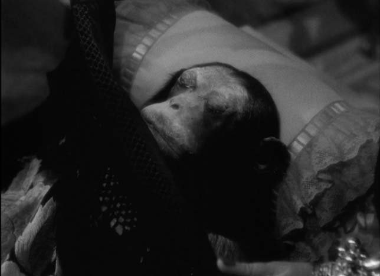
One of the more seemingly inexplicable parts of Wilder’s film actually contains one of its most important symbols, with Norma’s pet monkey playing a key foreshadowing role from beyond the grave. The chimp, a pet owned and trained by Norma to amuse her, leaves a vacant role that Joe will gradually fill after having unknowingly interrupted its funeral. From this point in the film, Joe is manipulated, or ‘trained’, by Norma to entertain and provide companionship to her. Naturally, Joe also ends up dead within the bounds of Norma’s estate, with this symbol, therefore, foreshadowing the full trajectory of his character. All of this is directly alluded to through Joe’s description of the ‘mixed-up dream’ he has the night of the funeral, imagining ‘an organ [player]’ and the ‘chimp…dancing for pennies’ that he will soon become.
This naturally brings us to the organ itself, which serves as a physical reminder of the unflattering parts of the new role Joe must play. Included after Joe wakes from his ‘mixed-up dream’, the shot above frames Max’s organ-playing hands as massive and overpowering, as the much-smaller Joe storms in demanding to know why his ‘clothes and things’ were moved to Norma’s house without his say-so. Crucially, Norma then reveals that she ordered this action and that Joe’s apartment debts are ‘all taken care of’, hand-waving his attempt at grasping back some control and dignity by proposing it be ‘deduct[ed]...from [his] salary’. This scene reveals the symbolic role the organ plays within Sunset Boulevard, reminding Joe of the shameful and powerless role of the ‘pet monkey’ that he now fills, as well as what he will be ‘dancing’ for.
Allusions
Finally, we come to allusions, one of the techniques that Sunset Boulevard is most famous for. Allusions refer to anytime something from outside the world of the text is referenced, including other texts and real-world people, places, events, etc. Biblical and mythological allusions are commonly found in fiction, but references to something closer to our world can often bring a degree of realism to certain texts, working to strengthen their social commentary.
Cinematic Allusions
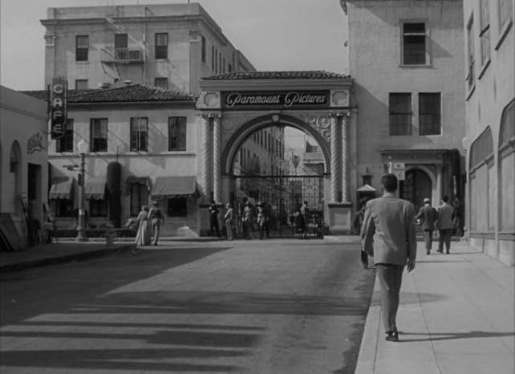

Being a film about film, Sunset Boulevard naturally contains many allusions to other films. However, Wilder does not shy away from adding an extra level of realism to his references to the film industry. Central to this is the use of the real (and still functional) Paramount Pictures studio to which Joe attempts to sell his clichéd baseball script. Notably, this is the studio that actually released Sunset Boulevard, all of which adds a self-deprecating edge to the satire of the film industry these scenes contain. The scene where the cigar-chomping Paramount executive, Mr Sheldrake, cynically suggests that changing Joe’s film concept to a ‘girls’ softball team’ might ‘put in a few numbers’, packs an extra punch due to the use of the real film studio, therefore, showing the effect of this allusion in strengthening the film’s satire. Allusions to specific films are additionally used for humorous purposes and character development. For instance, take Joe’s dry observation that the extravagance of the funeral for Norma’s pet means that he ‘must have been a very important chimp’, perhaps the ‘great-grandson of King Kong’. Here, Joe’s sardonic and witty character is revealed to the audience. Additionally, these kinds of references further place the film firmly in the world of real Hollywood, again working to strengthen the satire it offers of this industry.
Literary Allusions
Similarly, allusions to the world of literature flesh out both the characters and the world of Sunset Boulevard. The most stand-out example of this is the allusion to Charles Dickens’ classic novel Great Expectations. Here, Joe muses that the ‘unhappy look’ of Norma’s house reminds him of ‘Miss Havisham’ from this text. This is a character, who, after being abandoned by her fiance, refuses to change her clothing and lives secluded in a ‘rotting wedding dress’. Havisham directly parallels Norma, being a tragic figure immovably stuck in the past, with Norma’s excessive placement of young self-portraits being reminiscent of Havishman’s insistence on keeping her house’s clocks at the exact time she received her letter of marital rejection. Therefore, this comparison to the Dickens character, who engages in a more exaggerated version of Norma’s behaviour, seeks to highlight just how detached Norma is from reality through her attempts to live in the past, implying that what she is doing is just as deluded as refusing to remove a rotting wedding dress. Further, the eventual fate of Miss Havisham within Great Expectations, with her wedding dress catching fire and leaving her as an invalid, foreshadows Norma’s similar descent to invalidity through her madness.